Projects
Macif Redesign
Ce projet est le de
About the project
This is a module that I have realized as a part of my course in UX UI Design at Pop school that I’m currently student
About the app
A mobile app that we worked created to improve the sales for Chrismas The challenge is to design a mobile app for Shiseido brand
Goals
The focus is to deliver a simple, easy, wonderful shopping experience for users And to connect the physical sales point with the e-shop Increase withdrawals at the shop or at point of sale (POS) to encourag environmentally friendly deliver (slow deliver) personalization interface
Projet progress
As a team of four students we have designated a Decision-maker a Facilitator a Interviewer ( to handle interviews (looking for users to test, prepare questionnaire for interview ) and this was my role :) others tasks ( user research, benchmark, sketches, prototype we have worked together )
Challenge
We have worked Shiseido is a brand Japanese which offered a variety of cosmetic products of high quality, target mainly for adults women The brand has website already but to connect the physical sales point with the e-shop we have worked to develop a mobile app That allows a good user experience and make known the brand more in the sale point like Sephora and Nocibé…
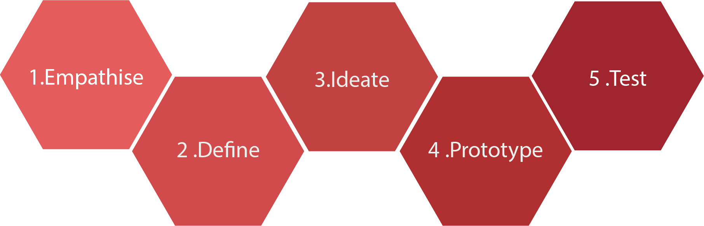1 .Empathise
User researche
to do a complet research about the project we gathred feedbaks form websites views, and empathy test that we have done, between the member teams , we saw many problems
Visibility problems Bit complicated to understand the site’s hierarchy Intrusive promotions Improve sale point and deliver mode Accessibility problems
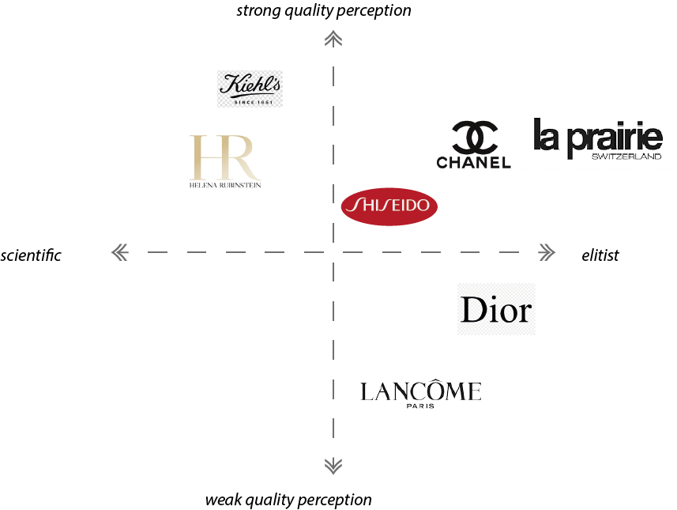Competitive analytics
Therefore, we did some market research and competitive analysis. We found both direct and indirect competitors to the brand where we compared the brands and later compared features on their websites, so we did some benchmarks to improve the important points that we have designated in our brief.
- Easy navigation
- Replace different elements especially gift for Christmas
- Improve deliver space with eco-responsible deliver
2 .Define
Discover The Right Problems
after empathy test been done in an affinity map. We started by noting up quotes and insights the most relevant on sticky notes; differentiating between qualitative and quantitative data. Then we rearranged and grouped the information under headers and subheaders.
“Every team member has defined a journey map then we have voted for the relevant ideas to have our affinity map”
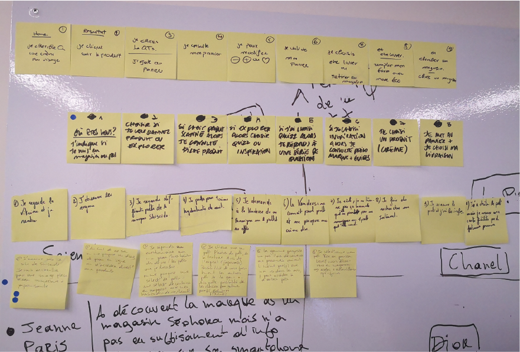Persona
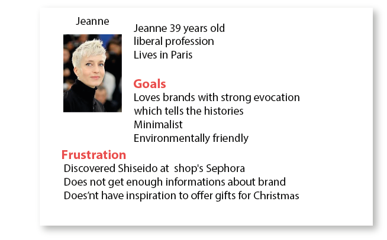User Journey Map
To understand the process the user will have to go through the App, and open possibilities for potential customer in the shop to discover the brand we created second journey map Therefore, we worked and kept in mind to make App simple, clear, and convenient. Around the insights obtained from the affinity map and HMW (How Might We) Statements. This helped in rendering a mind map that connected those ideas around a central subject; our users’ pain points. The sub themes of the main concept focused on 4 main points: 1. -visibility problems 2. -bit complicated to understand the site’s hierarchy 3. -intrusive promotions 4. -improve point of sale (POS) and deliver mode 5-accessibility problems
We were able to find and identify some frustrations and needs of the targeted user. by reading through this map,
Like a team , we developed a few “How Might We” Statements. are very helpful to turn the challenges into design opportunities and set the path for innovative solutions Up to this point, we have gathered a sufficient information to create our persona in order to understand our user's goals, behaviors, experiences and needs. and pain points
“How We Might” HWM “Comment Pourrions Nous”
• User Journey map 1
demonstrates the way users interact when discovering the product in point sales
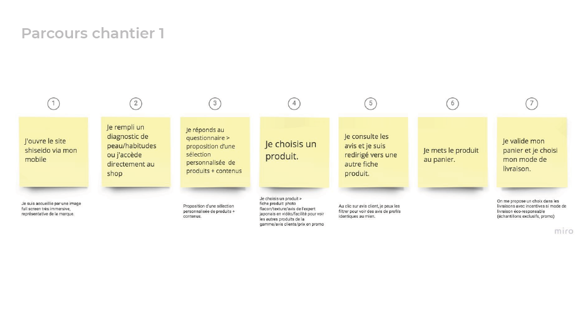• User Journey map 2
the way users could interact when connecting to the App from smartphone
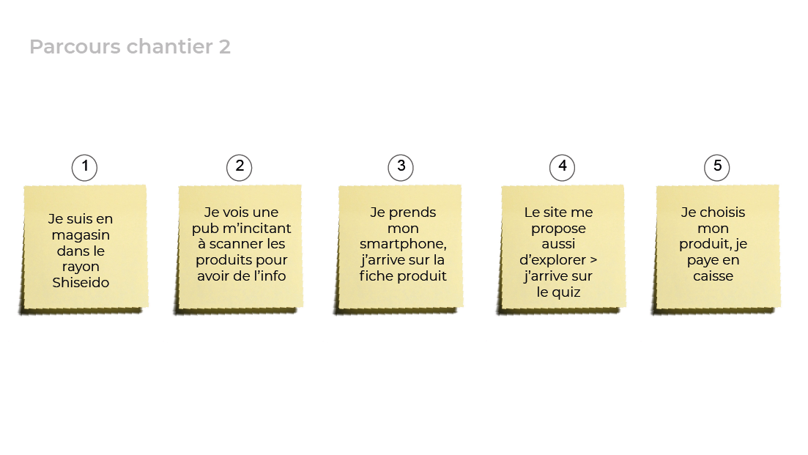3 .Ideate
As a team, we later brainstormed solution ideas that answer our problem stated above. We gathered our solutions and prioritised them in a MoSCoW chart based on 4 categories
MoSCoW Method
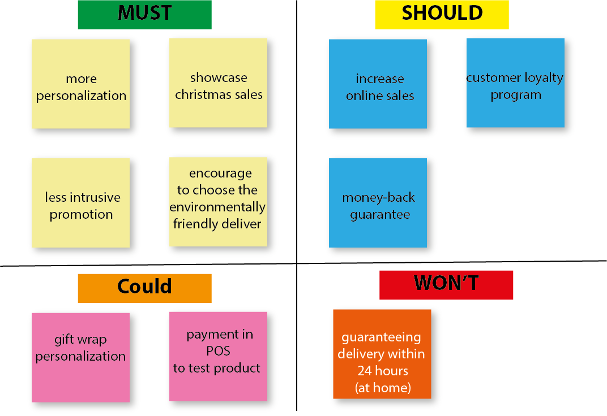in this stage of our process we found that MoSCow method is very beneficial it filters all the ideas that we have presented at the beginning and prevents us from putting lot of time and exceed the deadline and might not result what we have expected
User Flow
A user flow depicts the path of the user to fulfill a certain task, and by that it would validate our user journey! we have defined in our User Flow that Jeanne our Persona is going to accomplish 2 tasks The first that she is going to buy a face cream then she buy the second product , and it’s about a gift for his sister that do not over than 100 euros
4 .Prototype
Typography & colors
Roboto font
Shiseido
Bold ABCDEFGHIJKLMNOPRQSTUVWXYZ abcdefghijklmnoprqstuvwxyz 1234567890
Regular ABCDEFGHIJKLMNOPRQSTUVWXYZ abcdefghijklmnoprqstuvwxyz 1234567890
Colors
Sketches & wireframes
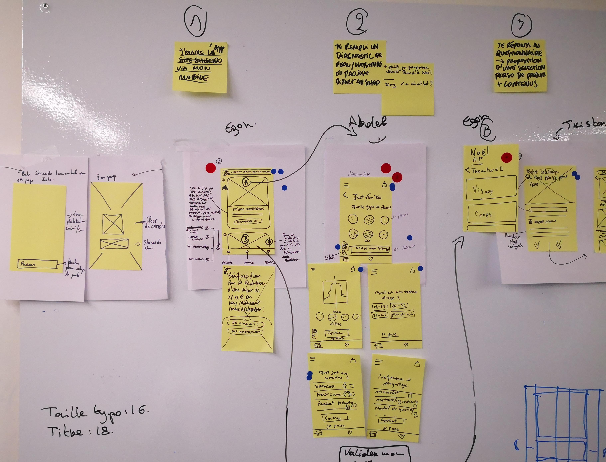 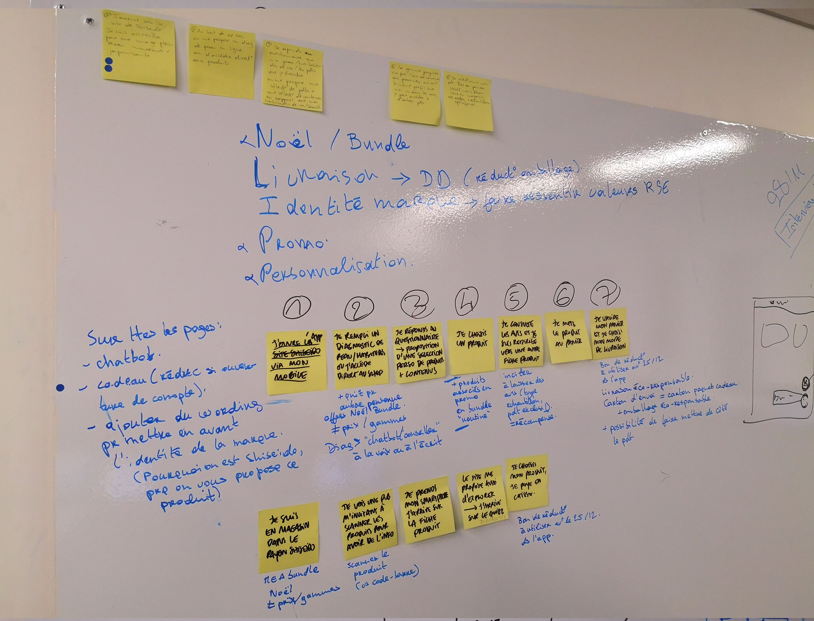Sketches & wireframes
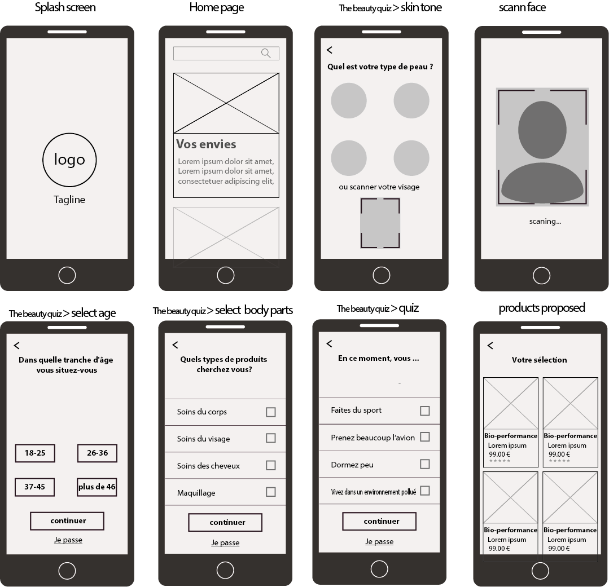 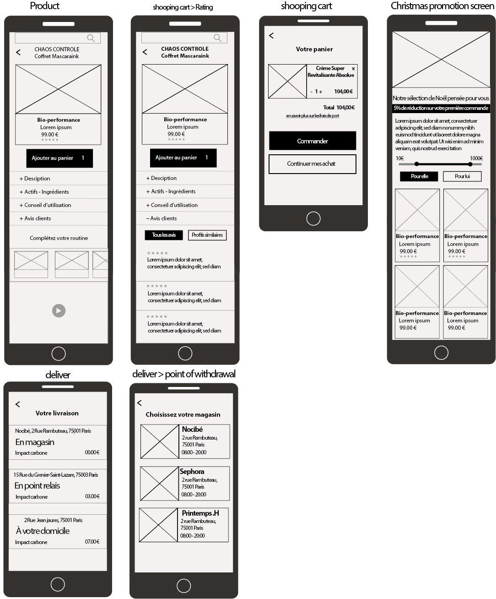Sketches & wireframes Prototype


Test
Here is a link for the interactive prototype that we designedto test ! Through this project, that we have realised in five days including half day for testing I learned to focus on the problem first and defining it properly